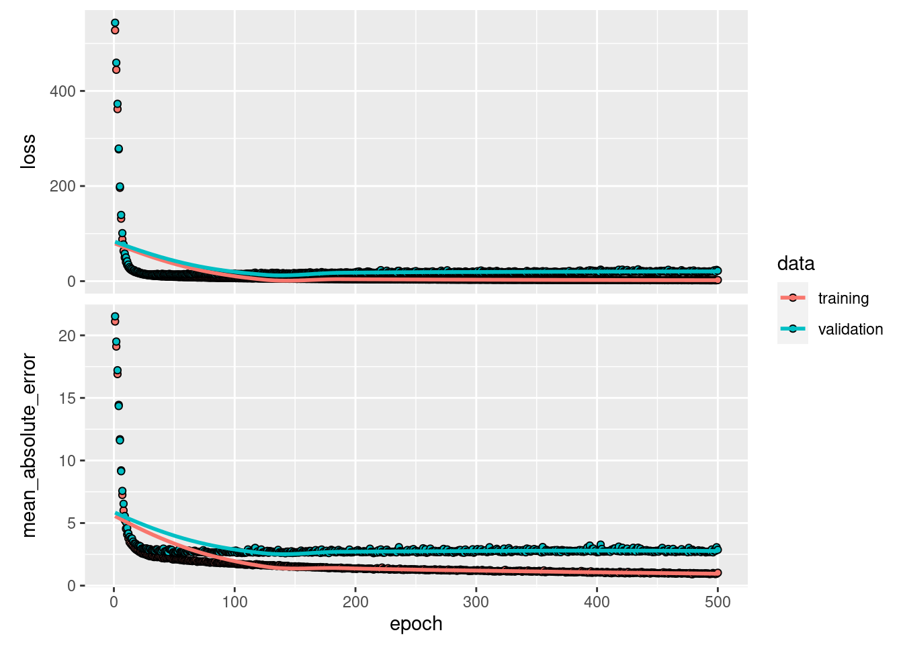

Chapter 11 Bottle Necks in Local Big Data Analytics
11.1 Example of Computation Time and Memory Allocation
11.1.1 Preparation
We first read the economics data set into R and extend it by duplicating its rows in order to get a slightly larger data set (this step can easily be adapted to create a very large data set).
# read dataset into R
economics <- read.csv("data/economics.csv")
# have a look at the data
head(economics, 2)## date pce pop psavert uempmed unemploy
## 1 1967-07-01 507.4 198712 12.5 4.5 2944
## 2 1967-08-01 510.5 198911 12.5 4.7 2945# create a 'large' dataset out of this
for (i in 1:3) {
economics <- rbind(economics, economics)
}
dim(economics)## [1] 4592 611.1.2 Naïve Approach (ignorant of R)
The goal of this code example is to compute the real personal consumption expenditures, assuming that pce in the economics data set provides the nominal personal consumption expenditures. Thus, we divide each value in the vector pce by a deflator 1.05.
The first approach we take is based on a simple for-loop. In each iteration one element in pce is divided by the deflator and the resulting value is stored as a new element in the vector pce_real.
# Naïve approach (ignorant of R)
deflator <- 1.05 # define deflator
# iterate through each observation
pce_real <- c()
n_obs <- length(economics$pce)
for (i in 1:n_obs) {
pce_real <- c(pce_real, economics$pce[i]/deflator)
}
# look at the result
head(pce_real, 2)## [1] 483.2 486.2How long does it take?
# Naïve approach (ignorant of R)
deflator <- 1.05 # define deflator
# iterate through each observation
pce_real <- list()
n_obs <- length(economics$pce)
time_elapsed <-
system.time(
for (i in 1:n_obs) {
pce_real <- c(pce_real, economics$pce[i]/deflator)
})
time_elapsed## user system elapsed
## 0.098 0.000 0.098Assuming a linear time algorithm (\(O(n)\)), we need that much time for one additional row of data:
time_per_row <- time_elapsed[3]/n_obs
time_per_row## elapsed
## 2.134e-05If we deal with big data, say 100 million rows, that is
# in seconds
(time_per_row*100^4) ## elapsed
## 2134# in minutes
(time_per_row*100^4)/60 ## elapsed
## 35.57# in hours
(time_per_row*100^4)/60^2 ## elapsed
## 0.5928Can we improve this?
11.1.3 Improvement 1: Pre-allocation of memory
In the naïve approach taken above, each iteration of the loop causes R to re-allocate memory because the number of elements in vector pce_element is changing. In simple terms, this means that R needs to execute more steps in each iteration. We can improve this with a simple trick by initiating the vector in the right size to begin with (filled with NA values).
# Improve memory allocation (still somewhat ignorant of R)
deflator <- 1.05 # define deflator
n_obs <- length(economics$pce)
# allocate memory beforehand
# Initiate the vector in the right size
pce_real <- rep(NA, n_obs)
# iterate through each observation
time_elapsed <-
system.time(
for (i in 1:n_obs) {
pce_real[i] <- economics$pce[i]/deflator
})Let’s see if this helped to make the code faster.
time_per_row <- time_elapsed[3]/n_obs
time_per_row## elapsed
## 1.742e-06Again, we can extrapolate (approximately) the computation time, assuming the data set had millions of rows.
# in seconds
(time_per_row*100^4) ## elapsed
## 174.2# in minutes
(time_per_row*100^4)/60 ## elapsed
## 2.904# in hours
(time_per_row*100^4)/60^2 ## elapsed
## 0.04839This looks much better, but we can do even better.
11.1.4 Improvement 2: Exploit vectorization
In this approach, we exploit the fact that in R ‘everything is a vector’ and that many of the basic R functions (such as math operators) are vectorized. In simple terms, this means that a vectorized operation is implemented in such a way that it can take advantage of the similarity of each of the vector’s elements. That is, R only has to figure out once how to apply a given function to a vector element in order to apply it to all elements of the vector. In a simple loop, R has to go through the same ‘preparatory’ steps again and again in each iteration, this is time-intensive.
In this example, we specifically exploit that the division operator / is actually a vectorized function. Thus, the division by our deflator is applied to each element of economics$pce.
# Do it 'the R way'
deflator <- 1.05 # define deflator
# Exploit R's vectorization!
time_elapsed <-
system.time(
pce_real <- economics$pce/deflator
)
# same result
head(pce_real, 2)## [1] 483.2 486.2Now this is much faster. In fact, system.time() is not precise enough to capture the time elapsed…
time_per_row <- time_elapsed[3]/n_obs
# in seconds
(time_per_row*100^4) ## elapsed
## 0# in minutes
(time_per_row*100^4)/60 ## elapsed
## 0# in hours
(time_per_row*100^4)/60^2 ## elapsed
## 0In order to measure the improvement, we use microbenchmark::microbenchmark() to measure the elapsed time in microseconds (millionth of a second).
library(microbenchmark)
# measure elapsed time in microseconds (avg.)
time_elapsed <-
summary(microbenchmark(pce_real <- economics$pce/deflator))$mean
# per row (in sec)
time_per_row <- (time_elapsed/n_obs)/10^6Now we get a more precise picture regarding the improvement due to vectorization (again, assuming 100 million rows):
# in seconds
(time_per_row*100^4) ## [1] 0.1554# in minutes
(time_per_row*100^4)/60 ## [1] 0.002589# in hours
(time_per_row*100^4)/60^2 ## [1] 4.316e-0511.1.4.1 What do we learn from this?
- How R allocates and deallocates memory can have a substantial effect on computation time.
- (Particularly, if we deal with a large data set!)
- In what way the computation is implemented can matter a lot for the time elapsed.
- (For example, loops vs. vectorization/apply)
11.2 Case study: Parallel processing
In this example, we estimate a simple regression model that aims to assess racial discrimination in the context of police stops.43 The example is based on the ‘Minneapolis Police Department 2017 Stop Dataset,’ containing data on nearly all stops made by the Minneapolis Police Department for the year 2017.
We start with importing the data into R.
url <- "https://vincentarelbundock.github.io/Rdatasets/csv/carData/MplsStops.csv"
stopdata <- data.table::fread(url) We specify a simple linear probability model that aims to test whether a person identified as ‘white’ is less likely to have her vehicle searched when stopped by the police. In order to take into account level-differences between different police precincts, we add precinct-indicators to the regression specification
First, let’s remove observations with missing entries (NA) and code our main explanatory variable and the dependent variable.
# remove incomplete obs
stopdata <- na.omit(stopdata)
# code dependent var
stopdata$vsearch <- 0
stopdata$vsearch[stopdata$vehicleSearch=="YES"] <- 1
# code explanatory var
stopdata$white <- 0
stopdata$white[stopdata$race=="White"] <- 1We specify our baseline model as follows.
model <- vsearch ~ white + factor(policePrecinct)And estimate the linear probability model via OLS (the lm function).
fit <- lm(model, stopdata)
summary(fit)##
## Call:
## lm(formula = model, data = stopdata)
##
## Residuals:
## Min 1Q Median 3Q Max
## -0.1394 -0.0633 -0.0547 -0.0423 0.9773
##
## Coefficients:
## Estimate Std. Error t value
## (Intercept) 0.05473 0.00515 10.62
## white -0.01955 0.00446 -4.38
## factor(policePrecinct)2 0.00856 0.00676 1.27
## factor(policePrecinct)3 0.00341 0.00648 0.53
## factor(policePrecinct)4 0.08464 0.00623 13.58
## factor(policePrecinct)5 -0.01246 0.00637 -1.96
## Pr(>|t|)
## (Intercept) < 2e-16 ***
## white 1.2e-05 ***
## factor(policePrecinct)2 0.21
## factor(policePrecinct)3 0.60
## factor(policePrecinct)4 < 2e-16 ***
## factor(policePrecinct)5 0.05 .
## ---
## Signif. codes:
## 0 '***' 0.001 '**' 0.01 '*' 0.05 '.' 0.1 ' ' 1
##
## Residual standard error: 0.254 on 19078 degrees of freedom
## Multiple R-squared: 0.025, Adjusted R-squared: 0.0248
## F-statistic: 97.9 on 5 and 19078 DF, p-value: <2e-16A potential problem with this approach (and there might be many more in this simple example) is that observations stemming from different police precincts might be correlated over time. If that is the case, we likely underestimate the coefficient’s standard errors. There is a standard approach to compute estimates for so-called cluster-robust standard errors which would take the problem of correlation over time within clusters into consideration (and deliver a more conservative estimate of the SEs). However, this approach only works well if the number of clusters in the data is roughly 50 or more. Here we only have 5.
The alternative approach is to compute bootstrapped clustered standard errors. That is, we apply the bootstrap resampling procedure at the cluster level. Specifically, we draw \(B\) samples (with replacement), estimate and record for each bootstrap-sample the coefficient vector, and then estimate \(SE_{boot}\) based on the standard deviation of all respective estimated coefficient values.
# load packages
library(data.table)
# set the 'seed' for random numbers (makes the example reproducible)
set.seed(2)
# set number of bootstrap iterations
B <- 10
# get selection of precincts
precincts <- unique(stopdata$policePrecinct)
# container for coefficients
boot_coefs <- matrix(NA, nrow = B, ncol = 2)
# draw bootstrap samples, estimate model for each sample
for (i in 1:B) {
# draw sample of precincts (cluster level)
precincts_i <- sample(precincts, size = 5, replace = TRUE)
# get observations
bs_i <- lapply(precincts_i, function(x) stopdata[stopdata$policePrecinct==x,])
bs_i <- rbindlist(bs_i)
# estimate model and record coefficients
boot_coefs[i,] <- coef(lm(model, bs_i))[1:2] # ignore FE-coefficients
}Finally, let’s compute \(SE_{boot}\).
se_boot <- apply(boot_coefs,
MARGIN = 2,
FUN = sd)
se_boot## [1] 0.004043 0.004690Note that even with a very small \(B\), computing \(SE_{boot}\) takes up some time to compute. When setting \(B\) to over 500, computation time will be substantial. Also note that running this code does hardly use up more memory than the very simple approach without bootstrapping (after all, in each bootstrap iteration the data set used to estimate the model is approximately the same size as the original data set). There is little we can do to improve the script’s performance regarding memory. However we can tell R how to allocate CPU resources more efficiently to handle that many regression estimates.
Particularly, we can make use of the fact that most modern computing environments (such as a laptop) have CPUs with several cores. We can exploit this fact by instructing the computer to run the computations in parallel (simultaneously computing on several cores). The following code is a parallel implementation of our bootstrap procedure which does exactly that.
# install.packages("doSNOW", "parallel")
# load packages for parallel processing
library(doSNOW)
# get the number of cores available
ncores <- parallel::detectCores()
# set cores for parallel processing
ctemp <- makeCluster(ncores) #
registerDoSNOW(ctemp)
# set number of bootstrap iterations
B <- 10
# get selection of precincts
precincts <- unique(stopdata$policePrecinct)
# container for coefficients
boot_coefs <- matrix(NA, nrow = B, ncol = 2)
# bootstrapping in parallel
boot_coefs <-
foreach(i = 1:B, .combine = rbind, .packages="data.table") %dopar% {
# draw sample of precincts (cluster level)
precincts_i <- sample(precincts, size = 5, replace = TRUE)
# get observations
bs_i <- lapply(precincts_i, function(x) stopdata[stopdata$policePrecinct==x,])
bs_i <- rbindlist(bs_i)
# estimate model and record coefficients
coef(lm(model, bs_i))[1:2] # ignore FE-coefficients
}
# be a good citizen and stop the snow clusters
stopCluster(cl = ctemp)As a last step, we compute again \(SE_{boot}\).
se_boot <- apply(boot_coefs,
MARGIN = 2,
FUN = sd)
se_boot## (Intercept) white
## 0.002515 0.00285211.2.1 Parallelization with an EC2 instance
Now, let’s go through the bootstrap example. First, let’s run the non-parallel implementation of the script. When executing the code below line-by-line, you will notice that essentially all parts of the script work exactly as on your local machine. This is one of the great advantages of running R/RStudio Server in the cloud. You can implement your entire data analysis locally (based on a small sample), test it locally, and then move it to the cloud and run it on a larger scale in exactly the same way (even with the same GUI).
# CASE STUDY: PARALLEL ---------------------------
# install packages
install.packages("data.table")
install.packages("doSNOW")
# load packages
library(data.table)
## ------------------------------------------------------------------------
stopdata <- read.csv("https://vincentarelbundock.github.io/Rdatasets/csv/carData/MplsStops.csv")
## ------------------------------------------------------------------------
# remove incomplete obs
stopdata <- na.omit(stopdata)
# code dependent var
stopdata$vsearch <- 0
stopdata$vsearch[stopdata$vehicleSearch=="YES"] <- 1
# code explanatory var
stopdata$white <- 0
stopdata$white[stopdata$race=="White"] <- 1
## ------------------------------------------------------------------------
model <- vsearch ~ white + factor(policePrecinct)
## ------------------------------------------------------------------------
fit <- lm(model, stopdata)
summary(fit)
# bootstrapping: normal approach
## ----message=FALSE-------------------------------------------------------
# set the 'seed' for random numbers (makes the example reproducible)
set.seed(2)
# set number of bootstrap iterations
B <- 50
# get selection of precincts
precincts <- unique(stopdata$policePrecinct)
# container for coefficients
boot_coefs <- matrix(NA, nrow = B, ncol = 2)
# draw bootstrap samples, estimate model for each sample
for (i in 1:B) {
# draw sample of precincts (cluster level)
precincts_i <- sample(precincts, size = 5, replace = TRUE)
# get observations
bs_i <- lapply(precincts_i, function(x) stopdata[stopdata$policePrecinct==x,])
bs_i <- rbindlist(bs_i)
# estimate model and record coefficients
boot_coefs[i,] <- coef(lm(model, bs_i))[1:2] # ignore FE-coefficients
}
## ------------------------------------------------------------------------
se_boot <- apply(boot_coefs,
MARGIN = 2,
FUN = sd)
se_bootSo far, we have only demonstrated that the simple implementation (non-parallel) works both locally and in the cloud. The real purpose of using an EC2 instance in this example is to make use of the fact that we can scale up our instance to have more CPU cores available for the parallel implementation of our bootstrap procedure. Recall that running the script below on our local machine will employ all cores available to an compute the bootstrap resampling in parallel on all these cores. Exactly the same thing happens when running the code below on our simple t2.micro instance. However this type of EC2 instance only has one core. You can check this when running the following line of code in RStudio Server (assuming the doSNOW package is installed and loaded):
parallel::detectCores()When running the entire parallel implementation below, you will thus notice that it won’t compute the bootstrap SE any faster than with the non-parallel version above. However, by simply initiating another EC2 type with more cores, we can distribute the workload across many CPU cores, using exactly the same R-script.
# bootstrapping: parallel approaach
## ----message=FALSE-------------------------------------------------------
# install.packages("doSNOW", "parallel")
# load packages for parallel processing
library(doSNOW)
# get the number of cores available
ncores <- parallel::detectCores()
# set cores for parallel processing
ctemp <- makeCluster(ncores) #
registerDoSNOW(ctemp)
# set number of bootstrap iterations
B <- 50
# get selection of precincts
precincts <- unique(stopdata$policePrecinct)
# container for coefficients
boot_coefs <- matrix(NA, nrow = B, ncol = 2)
# bootstrapping in parallel
boot_coefs <-
foreach(i = 1:B, .combine = rbind, .packages="data.table") %dopar% {
# draw sample of precincts (cluster level)
precincts_i <- sample(precincts, size = 5, replace = TRUE)
# get observations
bs_i <- lapply(precincts_i, function(x) stopdata[stopdata$policePrecinct==x,])
bs_i <- rbindlist(bs_i)
# estimate model and record coefficients
coef(lm(model, bs_i))[1:2] # ignore FE-coefficients
}
# be a good citizen and stop the snow clusters
stopCluster(cl = ctemp)
## ------------------------------------------------------------------------
se_boot <- apply(boot_coefs,
MARGIN = 2,
FUN = sd)
se_boot11.3 Case study: Memory allocation
Consider the first steps of a data pipeline in R. The first part of our script to import and clean the data looks as follows.
###########################################################
# Big Data Statistics: Flights data import and preparation
#
# U. Matter, January 2019
###########################################################
# SET UP -----------------
# fix variables
DATA_PATH <- "materials/data/flights.csv"
# DATA IMPORT ----------------
flights <- read.csv(DATA_PATH)
# DATA PREPARATION --------
flights <- flights[,-1:-3]When running this script, we notice that some of the steps need a noticable amount of time to process. Moreover, while none of these steps obviously involves a lot of computation (such as a matrix inversion or numerical optimization), it quite likely involves memory allocation. We first read data into RAM (allocated to R by our operating system). It turns out that there are different ways to allocate RAM when reading data from a CSV file. Depending on the amount of data to be read in, one or the other approach might be faster. We first investigate the RAM allocation in R with mem_change() and mem_used().
# SET UP -----------------
# fix variables
DATA_PATH <- "data/flights.csv"
# load packages
library(pryr)
# check how much memory is used by R (overall)
mem_used()## 2.31 GB# check the change in memory due to each step
# DATA IMPORT ----------------
mem_change(flights <- read.csv(DATA_PATH))## 33 MB# DATA PREPARATION --------
flights <- flights[,-1:-3]
# check how much memory is used by R now
mem_used()## 2.34 GBThe last result is kind of interesting. The object flights must have been larger right after importing it than at the end of the script. We have thrown out several variables, after all. Why does R still use that much memory? R does by default not ‘clean up’ memory unless it is really necessary (meaning no more memory is available). In this case, R has still way more memory available from the operating system, thus there is no need to ‘collect the garbage’ yet. However, we can force R to collect the garbage on the spot with gc(). This can be helpful to better keep track of the memory needed by an analytics script.
gc()## used (Mb) gc trigger (Mb) max used
## Ncells 8435918 450.6 14535518 776.3 13486707
## Vcells 233380032 1780.6 421349634 3214.7 421349634
## (Mb)
## Ncells 720.3
## Vcells 3214.7Now, let’s see how we can improve the performance of this script with regard to memory allocation. Most memory is allocated when importing the file. Obviously, any improvement of the script must still result in importing all the data. However, there are different ways to read data into RAM. read.csv() reads all lines of a csv file consecutively. In contrast, data.table::fread() first ‘maps’ the data file into memory and only then actually reads it in line by line. This involves an additional initial step, but the larger the file, the less relevant is this first step with regard to the total time needed to read all the data into memory. By switching on the verbose option, we can actually see what fread is doing.
# load packages
library(data.table)
# DATA IMPORT ----------------
flights <- fread(DATA_PATH, verbose = TRUE)## OpenMP version (_OPENMP) 201511
## omp_get_num_procs() 12
## R_DATATABLE_NUM_PROCS_PERCENT unset (default 50)
## R_DATATABLE_NUM_THREADS unset
## R_DATATABLE_THROTTLE unset (default 1024)
## omp_get_thread_limit() 2147483647
## omp_get_max_threads() 12
## OMP_THREAD_LIMIT unset
## OMP_NUM_THREADS unset
## RestoreAfterFork true
## data.table is using 6 threads with throttle==1024. See ?setDTthreads.
## freadR.c has been passed a filename: data/flights.csv
## [01] Check arguments
## Using 6 threads (omp_get_max_threads()=12, nth=6)
## NAstrings = [<<NA>>]
## None of the NAstrings look like numbers.
## show progress = 0
## 0/1 column will be read as integer
## [02] Opening the file
## Opening file data/flights.csv
## File opened, size = 29.53MB (30960660 bytes).
## Memory mapped ok
## [03] Detect and skip BOM
## [04] Arrange mmap to be \0 terminated
## \n has been found in the input and different lines can end with different line endings (e.g. mixed \n and \r\n in one file). This is common and ideal.
## [05] Skipping initial rows if needed
## Positioned on line 1 starting: <<year,month,day,dep_time,sched_>>
## [06] Detect separator, quoting rule, and ncolumns
## Detecting sep automatically ...
## sep=',' with 100 lines of 19 fields using quote rule 0
## Detected 19 columns on line 1. This line is either column names or first data row. Line starts as: <<year,month,day,dep_time,sched_>>
## Quote rule picked = 0
## fill=false and the most number of columns found is 19
## [07] Detect column types, good nrow estimate and whether first row is column names
## Number of sampling jump points = 100 because (30960659 bytes from row 1 to eof) / (2 * 8882 jump0size) == 1742
## Type codes (jump 000) : 555555555C5CCC5555B Quote rule 0
## Type codes (jump 100) : 555555555C5CCC5555B Quote rule 0
## 'header' determined to be true due to column 1 containing a string on row 1 and a lower type (int32) in the rest of the 10048 sample rows
## =====
## Sampled 10048 rows (handled \n inside quoted fields) at 101 jump points
## Bytes from first data row on line 2 to the end of last row: 30960501
## Line length: mean=92.03 sd=3.56 min=68 max=98
## Estimated number of rows: 30960501 / 92.03 = 336403
## Initial alloc = 370043 rows (336403 + 9%) using bytes/max(mean-2*sd,min) clamped between [1.1*estn, 2.0*estn]
## =====
## [08] Assign column names
## [09] Apply user overrides on column types
## After 0 type and 0 drop user overrides : 555555555C5CCC5555B
## [10] Allocate memory for the datatable
## Allocating 19 column slots (19 - 0 dropped) with 370043 rows
## [11] Read the data
## jumps=[0..30), chunk_size=1032016, total_size=30960501
## Read 336776 rows x 19 columns from 29.53MB (30960660 bytes) file in 00:00.090 wall clock time
## [12] Finalizing the datatable
## Type counts:
## 14 : int32 '5'
## 1 : float64 'B'
## 4 : string 'C'
## =============================
## 0.000s ( 0%) Memory map 0.029GB file
## 0.003s ( 4%) sep=',' ncol=19 and header detection
## 0.000s ( 0%) Column type detection using 10048 sample rows
## 0.001s ( 1%) Allocation of 370043 rows x 19 cols (0.033GB) of which 336776 ( 91%) rows used
## 0.085s ( 95%) Reading 30 chunks (0 swept) of 0.984MB (each chunk 11225 rows) using 6 threads
## + 0.016s ( 18%) Parse to row-major thread buffers (grown 0 times)
## + 0.044s ( 49%) Transpose
## + 0.025s ( 28%) Waiting
## 0.000s ( 0%) Rereading 0 columns due to out-of-sample type exceptions
## 0.090s TotalLet’s put it all together and look at the memory changes and usage. For a fair comparison, we first have to delete flights and collect the garbage with gc().
# SET UP -----------------
# fix variables
DATA_PATH <- "data/flights.csv"
# load packages
library(pryr)
library(data.table)
# housekeeping
flights <- NULL
gc()## used (Mb) gc trigger (Mb) max used
## Ncells 8428293 450.2 14535518 776.3 13486707
## Vcells 230217626 1756.5 421349634 3214.7 421349634
## (Mb)
## Ncells 720.3
## Vcells 3214.7# check the change in memory due to each step
# DATA IMPORT ----------------
mem_change(flights <- fread(DATA_PATH))## 35.6 MB11.4 GPUs and Machine Learning
A most common application of GPUs for scientific computing is machine learning, in particular deep learning (machine learning based on artificial neural networks). Training deep learning models can be very computationally intense and to an important part depends on tensor (matrix) multiplications. This is also an area where you might come across highly parallelized computing based on GPUs without even noticing it, as the now commonly used software to build and train deep neural nets (tensorflow, and the high-level Keras API) can easily be run on a CPU or GPU without any further configuration/preparation (apart from the initial installation of these programs). The example below is a simple illustration of how such techniques can be used in an econometrics context.
11.4.1 Tensorflow/Keras example: predict housing prices
In this example we train a simple sequential model with two hidden layers in order to predict the median value of owner-occupied homes (in USD 1,000) in the Boston area (data are from the 1970s). The original data and a detailed description can be found here. The example follows closely this keras tutorial published by RStudio. See RStudio’s keras installation guide for how to install keras (and tensorflow) and the corresponding R package keras.44 While the purpose of the example here is to demonstrate a typical (but very simple!) usage case of GPUs in machine learning, the same code should also run on a normal machine (without using GPUs) with a default installation of keras.
Apart from keras, we load packages to prepare the data and visualize the output. Via dataset_boston_housing(), we load the dataset (shipped with the keras installation) in the format preferred by the keras library.
# load packages
library(keras)
library(tibble)
library(ggplot2)
library(tfdatasets)
# load data
boston_housing <- dataset_boston_housing()
str(boston_housing)## List of 2
## $ train:List of 2
## ..$ x: num [1:404, 1:13] 1.2325 0.0218 4.8982 0.0396 3.6931 ...
## ..$ y: num [1:404(1d)] 15.2 42.3 50 21.1 17.7 18.5 11.3 15.6 15.6 14.4 ...
## $ test :List of 2
## ..$ x: num [1:102, 1:13] 18.0846 0.1233 0.055 1.2735 0.0715 ...
## ..$ y: num [1:102(1d)] 7.2 18.8 19 27 22.2 24.5 31.2 22.9 20.5 23.2 ...In a first step, we split the data into a training set and a test set. The latter is used to monitor the out-of-sample performance of the model fit. Testing the validity of an estimated model by looking at how it performs out-of-sample is of particular relevance when working with (deep) neural networks, as they can easily lead to over-fitting. Validity checks based on the test sample are, therefore, often an integral part of modelling with tensorflow/keras.
# assign training and test data/labels
c(train_data, train_labels) %<-% boston_housing$train
c(test_data, test_labels) %<-% boston_housing$testIn order to better understand and interpret the dataset we add the original variable names, and convert it to a tibble.
library(dplyr)
column_names <- c('CRIM', 'ZN', 'INDUS', 'CHAS', 'NOX', 'RM', 'AGE',
'DIS', 'RAD', 'TAX', 'PTRATIO', 'B', 'LSTAT')
train_df <- train_data %>%
as_tibble(.name_repair = "minimal") %>%
setNames(column_names) %>%
mutate(label = train_labels)
test_df <- test_data %>%
as_tibble(.name_repair = "minimal") %>%
setNames(column_names) %>%
mutate(label = test_labels)Next, we have a close look at the data. Note the usage of the term ‘label’ for what is usually called the ‘dependent variable’ in econometrics.45 As the aim of the exercise is to predict median prices of homes, the output of the model will be a continuous value (‘labels’).
# check example data dimensions and content
paste0("Training entries: ", length(train_data), ", labels: ", length(train_labels))## [1] "Training entries: 5252, labels: 404"summary(train_data)## V1 V2 V3
## Min. : 0.01 Min. : 0.0 Min. : 0.46
## 1st Qu.: 0.08 1st Qu.: 0.0 1st Qu.: 5.13
## Median : 0.27 Median : 0.0 Median : 9.69
## Mean : 3.75 Mean : 11.5 Mean :11.10
## 3rd Qu.: 3.67 3rd Qu.: 12.5 3rd Qu.:18.10
## Max. :88.98 Max. :100.0 Max. :27.74
## V4 V5 V6
## Min. :0.0000 Min. :0.385 Min. :3.56
## 1st Qu.:0.0000 1st Qu.:0.453 1st Qu.:5.88
## Median :0.0000 Median :0.538 Median :6.20
## Mean :0.0619 Mean :0.557 Mean :6.27
## 3rd Qu.:0.0000 3rd Qu.:0.631 3rd Qu.:6.61
## Max. :1.0000 Max. :0.871 Max. :8.72
## V7 V8 V9
## Min. : 2.9 Min. : 1.13 Min. : 1.00
## 1st Qu.: 45.5 1st Qu.: 2.08 1st Qu.: 4.00
## Median : 78.5 Median : 3.14 Median : 5.00
## Mean : 69.0 Mean : 3.74 Mean : 9.44
## 3rd Qu.: 94.1 3rd Qu.: 5.12 3rd Qu.:24.00
## Max. :100.0 Max. :10.71 Max. :24.00
## V10 V11 V12
## Min. :188 Min. :12.6 Min. : 0.3
## 1st Qu.:279 1st Qu.:17.2 1st Qu.:374.7
## Median :330 Median :19.1 Median :391.2
## Mean :406 Mean :18.5 Mean :354.8
## 3rd Qu.:666 3rd Qu.:20.2 3rd Qu.:396.2
## Max. :711 Max. :22.0 Max. :396.9
## V13
## Min. : 1.73
## 1st Qu.: 6.89
## Median :11.39
## Mean :12.74
## 3rd Qu.:17.09
## Max. :37.97summary(train_labels) # Display first 10 entries## Min. 1st Qu. Median Mean 3rd Qu. Max.
## 5.0 16.7 20.8 22.4 24.8 50.0As the dataset contains variables ranging from per capita crime rate to indicators for highway access, the variables are obviously measured in different units and hence displayed on different scales. This is not per se a problem for the fitting procedure. However, fitting is more efficient when all features (variables) are normalized.
spec <- feature_spec(train_df, label ~ . ) %>%
step_numeric_column(all_numeric(), normalizer_fn = scaler_standard()) %>%
fit()
layer <- layer_dense_features(
feature_columns = dense_features(spec),
dtype = tf$float32
)
layer(train_df)## tf.Tensor(
## [[ 0.81205493 0.44752213 -0.2565147 ... -0.1762239 -0.59443307
## -0.48301655]
## [-1.9079947 0.43137115 -0.2565147 ... 1.8920003 -0.34800112
## 2.9880793 ]
## [ 1.1091131 0.2203439 -0.2565147 ... -1.8274226 1.563349
## -0.48301655]
## ...
## [-1.6359899 0.07934052 -0.2565147 ... -0.3326088 -0.61246467
## 0.9895695 ]
## [ 1.0554279 -0.98642045 -0.2565147 ... -0.7862657 -0.01742171
## -0.48301655]
## [-1.7970455 0.23288251 -0.2565147 ... 0.47467488 -0.84687555
## 2.0414166 ]], shape=(404, 13), dtype=float32)We specify the model as a linear stack of layers: The input (all 13 explanatory variables), two densely connected hidden layers (each with a 64-dimensional output space), and finally the one-dimensional output layer (the ‘dependent variable’).
# Create the model
# model specification
input <- layer_input_from_dataset(train_df %>% select(-label))
output <- input %>%
layer_dense_features(dense_features(spec)) %>%
layer_dense(units = 64, activation = "relu") %>%
layer_dense(units = 64, activation = "relu") %>%
layer_dense(units = 1)
model <- keras_model(input, output)In order to fit the model, we first have to compile it (configure it for training). At this step we set the configuration parameters that will guide the training/optimization procedure. We use the mean squared errors loss function (mse) typically used for regressions. We chose the RMSProp optimizer to find the minimum loss.
# compile the model
model %>%
compile(
loss = "mse",
optimizer = optimizer_rmsprop(),
metrics = list("mean_absolute_error")
)Now we can get a summary of the model we are about to fit to the data.
# get a summary of the model
model## Model
## Model: "model"
## _______________________________________________________
## Layer (type) Output Shap Param Connected to
## =======================================================
## AGE (InputLayer) [(None,)] 0
## _______________________________________________________
## B (InputLayer) [(None,)] 0
## _______________________________________________________
## CHAS (InputLayer) [(None,)] 0
## _______________________________________________________
## CRIM (InputLayer) [(None,)] 0
## _______________________________________________________
## DIS (InputLayer) [(None,)] 0
## _______________________________________________________
## INDUS (InputLayer [(None,)] 0
## _______________________________________________________
## LSTAT (InputLayer [(None,)] 0
## _______________________________________________________
## NOX (InputLayer) [(None,)] 0
## _______________________________________________________
## PTRATIO (InputLay [(None,)] 0
## _______________________________________________________
## RAD (InputLayer) [(None,)] 0
## _______________________________________________________
## RM (InputLayer) [(None,)] 0
## _______________________________________________________
## TAX (InputLayer) [(None,)] 0
## _______________________________________________________
## ZN (InputLayer) [(None,)] 0
## _______________________________________________________
## dense_features_1 (None, 13) 0 AGE[0][0]
## B[0][0]
## CHAS[0][0]
## CRIM[0][0]
## DIS[0][0]
## INDUS[0][0]
## LSTAT[0][0]
## NOX[0][0]
## PTRATIO[0][0]
## RAD[0][0]
## RM[0][0]
## TAX[0][0]
## ZN[0][0]
## _______________________________________________________
## dense_2 (Dense) (None, 64) 896 dense_features_1[0]
## _______________________________________________________
## dense_1 (Dense) (None, 64) 4160 dense_2[0][0]
## _______________________________________________________
## dense (Dense) (None, 1) 65 dense_1[0][0]
## =======================================================
## Total params: 5,121
## Trainable params: 5,121
## Non-trainable params: 0
## _______________________________________________________Given the relatively simple model and small dataset, we set the maximum number of epochs to 500 and allow for early stopping in case the validation loss (based on test data) is not improving for a while.
# Set max. number of epochs
epochs <- 500Finally, we fit the model while preserving the training history, and visualize the training progress.
# Fit the model and store training stats
history <- model %>% fit(
x = train_df %>% select(-label),
y = train_df$label,
epochs = epochs,
validation_split = 0.2,
verbose = 0
)
plot(history)
11.5 A word of caution
From just comparing the number of threads of a modern CPU with the number of threads of a modern GPU, one might get the impression that parallel tasks should always be implemented for GPU computing. However, whether one approach or the other is faster can depend a lot on the overall task and the data at hand. Moreover, the parallel implementation of tasks can be done more or less well on either system. Really efficient parallel implementation of tasks can take a lot of coding time (particularly when done for GPUs).46.
Note that this example aims to illustrate a point about computation in an applied econometrics context. It does not make any argument about identification or the broader research question whatsoever.↩︎
This might involve the installation of additional packages and software outside the R environment.↩︎
Typical textbook examples in machine learning deal with classification (e.g. a logit model), while in microeconometrics the typical example is usually a linear model (continuous dependent variable).↩︎
For a more detailed discussion of the relevant factors for well done parallelization (either on CPUs or GPUs), see Matloff (2015)↩︎